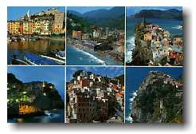
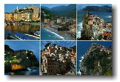
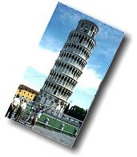
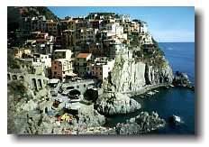
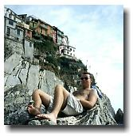
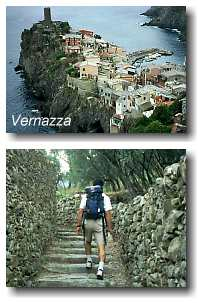
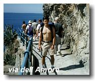
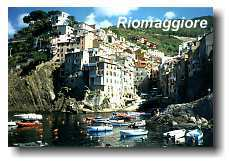
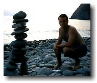

Cinque Terre, Italy

|
Cinque Terre, Italy  |
|
Trip #9: Friday September 3 – Sunday September 5, 1999 From Florence, Ryan and I made a quick stop in Pisa to see the famous leaning building. It’s got quite a lean to it. I think their feeble attempt with cement dead weights and cables to stop the continuing lean (1~2mm/year) is not going to do it. You heard it from me. That thing is going to fall. |
|
Afterwards, our destination was a small town called Manarola in Cinque (pronouced in a way that no Chinese person will approve) Terre. Cinque Terre is made up of 5 small towns that harbours the west coast of Italy. It is considered the most beautiful part of Italy’s Riviera. Apparently the place had gone months without rain, to the point that they declared the water undrinkable. So the place was really due for some precipitation. Unfortunately, it had to happen while we were there. Our only full day there proved to be a wet one. That was the day that we hiked along the coastline to see 3 of the other 4 towns of Cinque Terre. Just north of Manarola is Corniglia, which may be the smallest town of the five, but it stands tall on the edge of a large cliff. Venazza is my favourite, as it dazzled me with a castle and narrow maze-like streets. Monterosso is the largest of them all and this is where we had lunch while shielding ourselves from the rain under an overpass. The shelter was shared with a group of kids (who couldn’t have been more than 7 years old but were carrying around cell phones) on their elementary school trip, who did none other than break out a flat soccer ball and start a big game of football (they call soccer football because it’s played with your feet and why we call football football is a big wonder). Although one day was pissing rain, the others were sunny and hot. It was much better trekking under this condition, as Ryan and I walked along "via dell Amore" (very romantic with Ryan indeed) to go to Riomaggiore, the last town of Cinque Terre and the southmost one. After spending some time lying on the rocks there, we headed to the beach between Manarola and Corniglia, where it was steamy hot during midday. The hostel we stayed at was brand spanking new and had the look of one but not the smell. That’s what happens when a bunch of dirty backpackers get together. But the experience there is worth noting, as many hours were spent chatting with dudes and dudettes there. I’m going to mention their names just in case they happen to stumble upon this website one day when they're old and wrinkly and they need to reminisce: Alex and Mattia, high school students from Milan; Jeff, from Melbourne, Susan from Melbourne as well, and Venessa and her sister from Toronto, among others. Took a long night train back to Hannover, then flew out to Vancouver. Well, that’s it. That concludes my trip in Europe. |
|
The End. |
 johnnyo@canada.com
johnnyo@canada.com